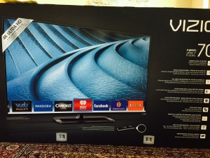
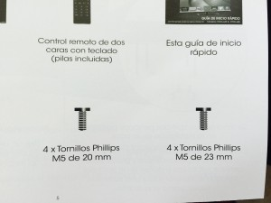

I have been thinking lately about how to quantify what differentiates my company and offering from competitors like ADP and zenefits.
There are the obvious answers, we have a complete, integrated, single-database, single-system, end to end solution. We have, according to our clients, the best personable customer service. We have, in my view, the best software application in the industry. This is all good, but not enough. I mean I hope everybody in our industry strives to have great customer service and continues to update and innovate on the software front. I would consider that a minimum baseline and not a distinguishing feature, not a company identity.
While I am pondering those thoughts in my head I saw a beautiful UltraHD 70” Vizio t.v. at Costco, selling for a good price.

my beautiful new t.v.
I went home and found out that Costco.com had a special on it for $500. The initial warehouse price already matched Amazon’s, so with the $500 off it became a no brainer and I purchased one, delivered to the comfort of my home.
Then when I was setting it up, I saw that it came with two bags of screws, each with four screws, identical color, almost identical size and look. The screws are used to assemble the stand and to attach the stand to the back of the t.v. One set was used to assemble the stand and the other set to attach it to the t.v.

So far so good, i cannot visually tell the screws apart, but they are different sizes according to the caption. So i reached out to the bags of screws and the only thing printed on the plastic bags was a sequence of digits, a product number maybe, with nothing significant as far as telling me which is the 20 mm and which is the 23 mm screws. So I took a gamble and chose the screws that looked a tiny bit larger as the 23 mm screws. I installed it, and of course i had picked the wrong set. So I had to start over and swap them. Not a big deal, just added few more minutes to the installation time.
Then it hit me. That’s what differentiates us from everybody else. Ever since we started on this journey back in 2008 our goal was to create a zero friction experience for our users. When deciding between printing a random set of numbers on a bag of screws or clearly identifying the bag as “M5 de 20 mm” we always chose the latter. When deciding between telling our clients to reach support via automated, cumbersome, systems or assigning them a real live person they know by name, email and direct phone number, we chose the latter. We never had an automated, maze-like, drive me crazy, support system, and we never will. When choosing between cubicles, opaque walls, or open office environment we chose the latter. When choosing between trying to integrate separate payroll, HR, benefits, Applicant Tracking, performance review, time keeping systems and building a kick ass, fully integrated, cohesive, single source, single database, system, we chose the latter.
Most importantly, every Spring, when we sit down and ponder the next set of innovations that we will tackle over the upcoming year, we always base it on what provides our clients a zero fiction experience. Every time we look at something and have to decide between making it simpler, easier, more natural for the client to use, vs. developing it faster, cheaper, easier, we always chose the former. We always chose to provide a zero friction environment to our clients. We want the software to enable their productivity not to limit it or slow it down.
Are we perfect? of course not. The minute we start thinking that we succeeded in delivering the zero friction experience is the minute we fail. We have a long way to go. We will always have a long way to go. We will never achieve perfection, but that will not deter us from always chasing it.